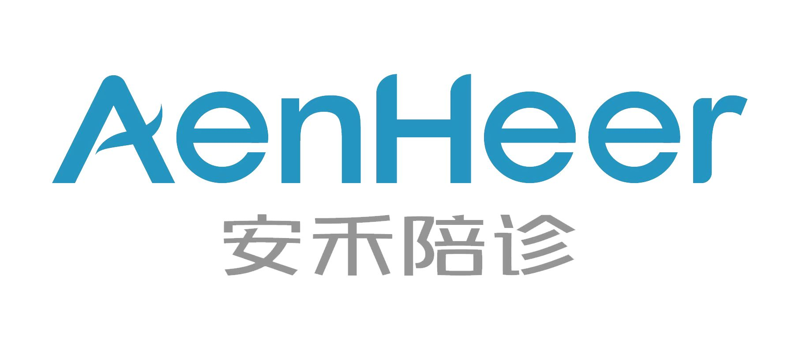

时间：2023-05-11 访问量：1179
伊戎陪诊，助您就医无忧！
随着我国老龄化的不断加剧，前往医院就诊的人数不断增加，能陪伴老人一起就医的子女，很多都是请假前往，子女无法陪同父母前往就医的现象逐渐增加。作为伊戎专业的陪诊员，就是代替请假不方便、孩子在外地工作的人群，陪同他们的父母到医院进行检查。在患者就医的过程中，给予患者家人般的陪伴。
两位老人不久前刚从老家来京，患者长期失眠伴有睡眠呼吸障碍，住在离朝阳医院不远的酒店里。原定7:30分见面，伊戎陪诊员提前半小时抵达，开始做陪诊前的准备，患者挂的是特需门诊，提前帮老人办理医保关联，分诊报到。及时协助家属记录医嘱是关键环节，一边手动记录，一边手机录音记录医患沟通的全过程，并陪同患者开药拿药。
科普分享|内容摘自三甲医院专家文章
睡眠呼吸障碍
一、病因
大多数患者可以找到导致睡眠时反复发生呼吸停顿或(和)低通气的因素，包括睡眠时呼吸控制异常、睡眠姿势和体位、循环时间和心输出量、上气道形态学改变及遗传因素等。
(1)阻塞性SDB发病的三个基本特征已阐明，即:①上气道的阻塞，常见咽部，如肥胖患者上气道周围脂肪增多，气道外压增高，导致管腔狭窄;肢端肥大症、甲状腺功能减退症，可能由于上气道组织增生或黏液水肿，导致管腔狭窄且易于塌陷;咽部、舌和下颌解剖结构异常，如下颌后缩或下颌过小，颈子过粗过短等到也可导致管腔狭窄。②咽腔的大小受上气道肌肉张力影响，醒觉时气道肌张力较高，睡眠时上气道肌张相应降低，快动眼睡眠期(REM)肌张力最低，此期呼吸暂停的次数往往最多。OSAS患者上气道肌纤维断裂、神经脱髓鞘，导致肌张力下降，也是气道管腔易于塌陷的重要原因。③咽腔的大小取决于咽腔关闭压和开放压的平衡，吸气时胸内压降低，管壁倾向于塌陷;呼气时胸内压增高，管壁倾向于开放，因此气流限制和呼吸停顿仅发生在吸气相。
(2)遗传因素:SDB有家族聚集倾向。长相的遗传，使得家族中许多人有易患SDB的颌面测量学特征。研究发现对高碳酸血症和低氧的敏感也有家族性，睡眠中易于发生周期性呼吸。肥胖亦有遗传倾向。
二、症状
SDB的主要病理生理变化是睡眠期间反复出现呼吸暂停或低通气所导致的低氧血症或(和)高碳酸血症，以及睡眠结构的改变，引起一系列的临床表现和多器官功能的损害。包括睡眠期间的症状，白天的症状和器官功能的损害与合并症。
1.睡眠期间的症状打鼾是OSAS的主要症状，是气流通过狭窄的咽部时咽腔软组织发生颤动所致，老年患者即使病情较重，鼾声也可能较小;夜间憋醒与窒息，个别严重者可因窒息而死亡;其他症状还有失眠、遗尿、惊叫、夜游等。
2.白天的症状白天过度困倦(excessivedaytimesleepiness，EDS)往往是OSAS最突出的症状，因夜间反复睡眠中断，睡眠质量下降所致。轻者仅有注意力不集中，间歇打瞌睡。严重患者在与人谈话，甚至驾车、骑自行车时也会打瞌睡。晨起头痛，多见于女性。可出现神经精神症状，如记忆力减退、性格改变、焦虑、抑郁等，老年患者尤其明显。
3.器官功能损害与并发症的表现患者可能出现性功能障碍、易疲劳等症状，病情持久可引起或加重多个系统的疾病，如高血压、心脑血管疾病、肺心病和呼吸衰竭、糖尿病等，有时这些疾病可能是就诊的主要症状，而没有注意SDB的存在。
对症部分医院推荐（仅供参考）
中山大学附属第三医院
首都医科大学附属北京朝阳医院
中国医科大学附属盛京医院
西京医院
复旦大学附属眼耳鼻喉科医院
 4008382558
4008382558